Memoria de Cálculo Estructural y Modelado 3D (COVENIN 1756-2001)
Diseñado y calculado en Etabs 9 por Moisés Campos
La Torre Los Potocos es una estructura metálica industrial diseñada bajo la norma sísmica COVENIN 1756-2001
Cuenta con pórticos espaciales y riostras orientados a soportar cargas exigentes en una zona de amenaza elevada.Mapa de Zonificación Sísmica de Venezuela
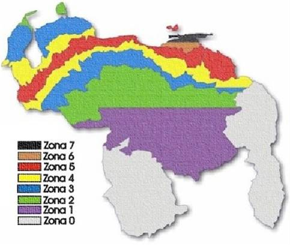
Derivas Máximas - Sismo Dirección X (SX)
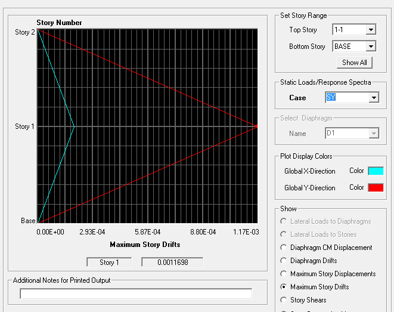
Derivas Máximas - Sismo Dirección Y (SY)
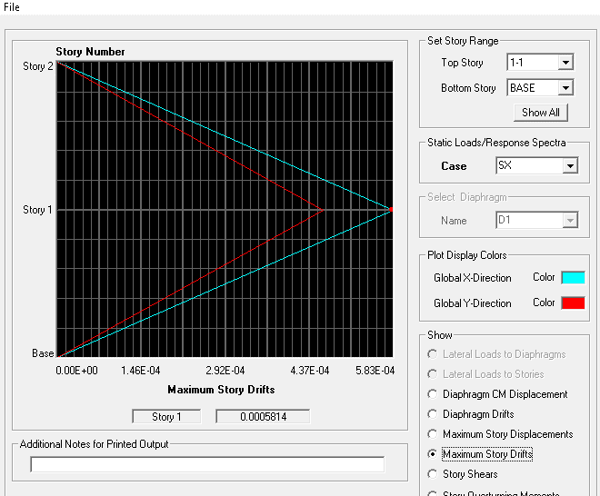
Plano de Ejes Estructurales y Puntos de Apoyo
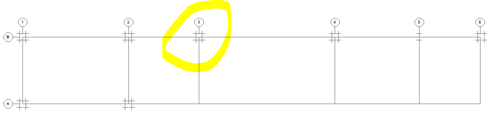
Cortantes por Nivel - Dirección X (SX)
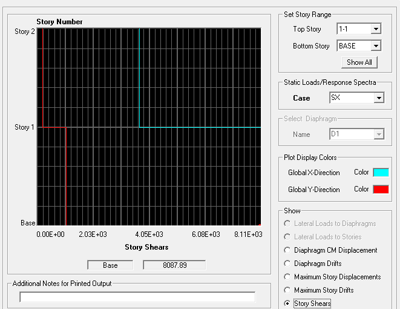
Cortantes por Nivel - Dirección Y (SY)
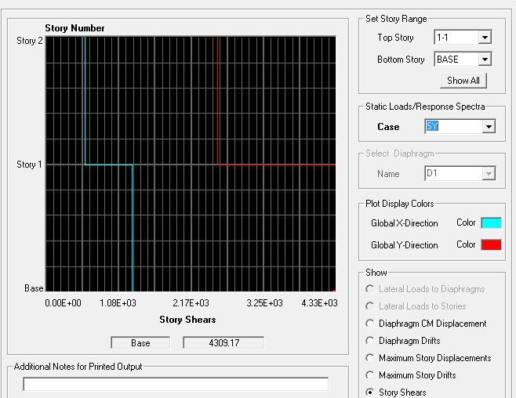
Asignación de Diafragma Rígido (D1) y Excentricidad
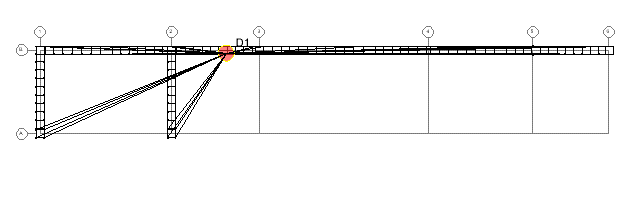
Vista de Elevación Modal - Modo 2
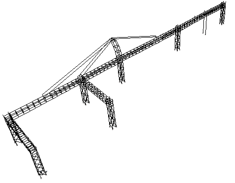
Deformada Modal - Modo 3 (Periodo 0.329s)
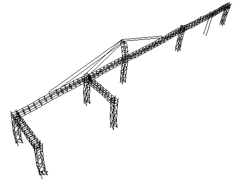
Deformada Modal - Modo 1 (Periodo 1.139s)
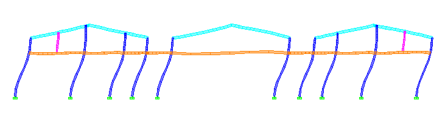
Distribución Espacial de Fuerzas Cortantes (Shear)
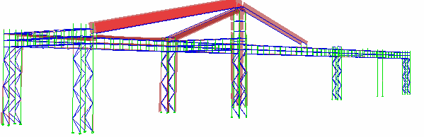
Envolvente de Momentos Flectores
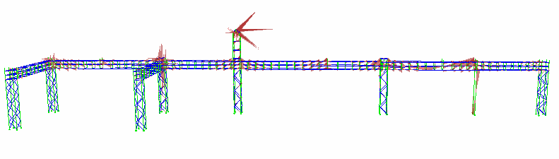
Modelo Tridimensional Alámbrico General
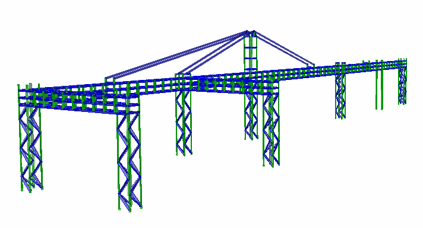